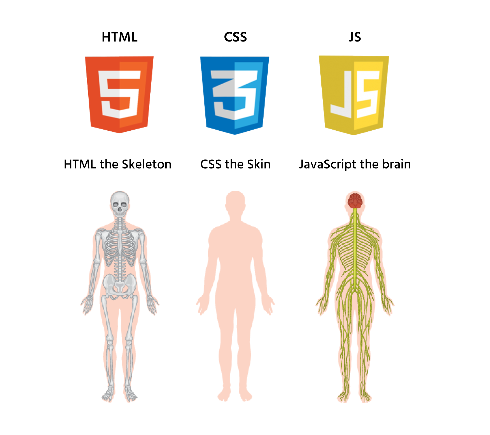
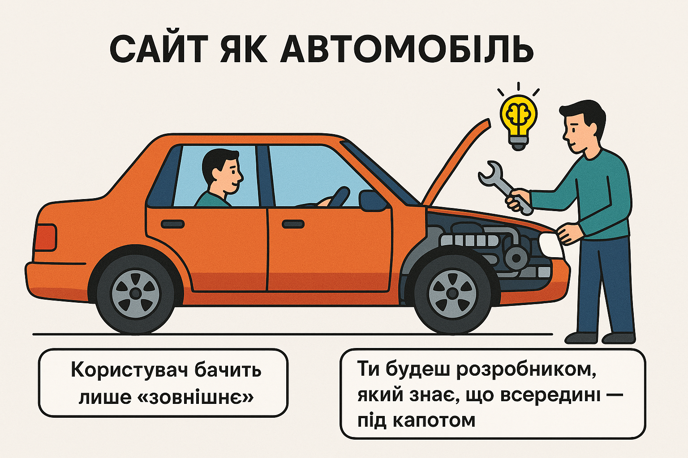
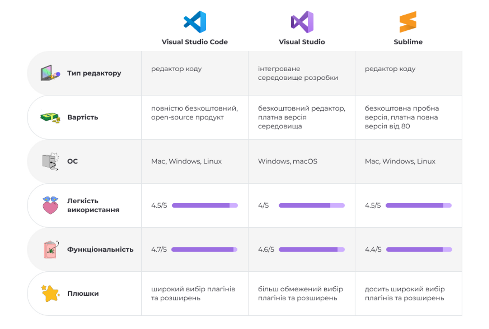
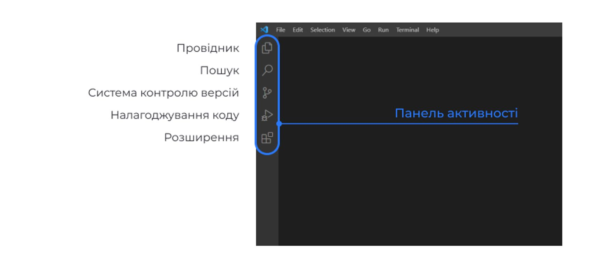
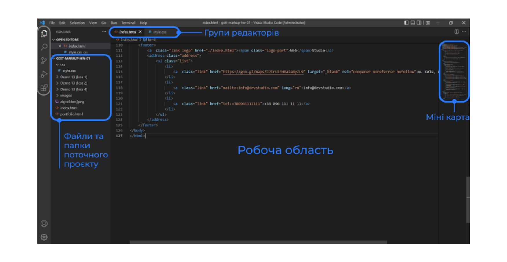

Хто такий Full Stack Developer?
Full Stack Developer (розробник повного циклу) — це спеціаліст, який вміє працювати як з тією частиною програми, яку бачить користувач (Front End), так і з внутрішньою частиною, яка працює «за лаштунками» (Back End).
Front End (зовнішня частина)
Це те, що ми бачимо на сайті чи в додатку — кнопки, пошуковий рядок, зображення, меню тощо. Наприклад, якщо ти заходиш у Google, пошуковий рядок і кнопки — це частина Front End.
Back End (внутрішня частина)
Це те, що працює за кулісами. Наприклад, коли ти натискаєш на кнопку пошуку в Google, система обробляє твій запит і знаходить потрібну інформацію. Це робить саме Back End.
Веб-розробники, які займаються обома цими частинами, називаються Full Stack Developers.

Чим займається Full Stack Developer?
🔹 Робота з CMS (системи управління контентом).
🔹 Налагодження вже існуючих сайтів чи додатків або створення нових.
🔹 Співпраця з дизайнерами та командою маркетингу для покращення дизайну та функціональності.
🔹 Налаштування API — це спеціальні інтерфейси для взаємодії між різними частинами системи.
🔹 Full Stack Developer часто «гасить пожежі» на різних етапах проєкту, вирішуючи проблеми на Front End чи Back End.

Які навички потрібні Full Stack Developer?
Hard Skills (технічні навички)
🔹 Git та GitHub — для роботи в команді.
🔹 Основи HTML та CSS — для створення сайту.
🔹 JavaScript — для створення функціональних елементів на сайті.
🔹 Основи роботи з серверами та базами даних (Back End).
🔹 Основи тестування коду, щоб він працював правильно.
Soft Skills (м'які навички)
🔹 Уміння працювати в команді — важливо взаємодіяти з дизайнерами та маркетологами.
🔹 Творчість — допомагає робити проєкти не тільки корисними, а й цікавими для користувачів.
🔹 Увага до деталей — важливо, щоб усе працювало правильно.
🔹 Терпіння — створення проєкту займає час.
🔹 Гарний тайм-менеджмент — щоб все встигнути та не втомитися.
Тепер ти знаєш, що робить Full Stack Developer і які навички йому потрібні. Ці знання будуть корисні для твоїх перших кроків у веб-розробці!
Перевір свої знання!
1. Що робить Full Stack Developer?
2. Що таке Front End?
3. Які з навичок є важливими для Full Stack Developer?
🌐 Що таке HTML (і з чого взагалі робиться сайт?)
Ти користуєшся інтернетом щодня — дивишся відео, шукаєш щось у Google, граєш в онлайн-ігри… Але чи знаєш ти, з чого "зліплений" сайт?
🚧 Уяви, що сайт — це людина:
🔹 HTML — це скелет, який підтримує всю структуру тіла 🦴
🔹 CSS — це шкіра і зовнішній вигляд, який надає вигляду і стилю 🌟
🔹 JavaScript — це нервова система, яка дозволяє організму реагувати та взаємодіяти з навколишнім середовищем 🧠
Ці три технології — HTML, CSS і JavaScript — завжди працюють разом, щоб створити сучасні сайти.
🧩 HTML — головна структура сайту
HTML розшифровується як HyperText Markup Language. Але не лякайся цієї довгої назви. Головне знати: HTML — це не мова програмування. Це мова розмітки.
Що це означає?
HTML допомагає браузеру зрозуміти, що саме розміщено на сторінці:
🔹 текст ✏️
🔹 картинки 🖼️
🔹 заголовки 📢
🔹 кнопки 🔘
🔹 посилання 🔗
🔹 відео 📹
Тобто, HTML створює "скелет" сторінки, на якому потім усе інше тримається.
🎨 CSS — це стиль і краса
CSS розшифровується як Cascading Style Sheets.
HTML робить сайт "голим" — просто текст, картинки, кнопки, все сіро й сумно. А CSS додає барви, шрифти, анімації, позиціонування і все, що робить сторінку гарною!
🤖 JavaScript — це магія та рух
JavaScript — це справжня мова програмування. Вона потрібна, щоб сторінка реагувала на тебе, користувача.
Завдяки JavaScript сайт може:
🔹 показати повідомлення, коли натискаєш кнопку ✅
🔹 змінювати щось без перезавантаження сторінки 🔁
🔹 робити форми, ігри, калькулятори, інтерактивні карти 🗺️🎲📋
Без JavaScript сайт як картина — гарна, але не рухається. А з ним — живий і кмітливий.
🚗 Сайт як автомобіль
Ти, можливо, не знаєш, як працює мотор, але можеш сісти в авто і поїхати. Так само й з сайтом: користувач бачить лише "зовнішнє", але ти будеш розробником, який знає, що всередині — під капотом. 🧠🔧
Перевір свої знання про веб-технології!
1. Що таке HTML?
2. Яку роль виконує CSS на сайті?
3. Для чого використовується JavaScript?
Знайомство із VS Code
Що таке VS Code і навіщо він потрібен?
Щоб писати код, програмістам потрібен спеціальний інструмент — редактор коду. Протягом курсу ми будемо працювати з найпопулярнішим таким інструментом — Visual Studio Code (VS Code).
Чому саме VS Code?
🔹 Visual Studio Code — це безкоштовний, потужний і гнучкий редактор коду, який працює на Windows, macOS і Linux.
🔹 Він підтримує десятки мов програмування — від HTML та JavaScript до Python, Java, C++ та інших.
🔹 У нього є величезна кількість розширень, які роблять роботу приємнішою: автоматичне форматування, підказки, підсвітка синтаксису, автозбереження, перевірка помилок — і це лише початок.
VS Code — це редактор, який використовують і новачки, і досвідчені розробники у справжніх компаніях. Тому ти одразу вчитимешся працювати в реальному середовищі.
Як почати роботу?
1. Завантаження
🔗 Перейди за посиланням code.visualstudio.com і встанови VS Code на свій комп'ютер.
2. Підготовка робочого простору
🔹 📁 Створи на комп'ютері папку Projects. Тут будеш зберігати всі майбутні проєкти.
🔹 🖱 Двічі клікни на іконку VS Code, щоб відкрити редактор.
🔹 📂 Клікни на вкладку Провідник (іконка з двома сторінками) → Open Folder → обери/створи папку для нового проєкту.
При створенні папок і файлів використовуй англійські малі букви, слова розділяй дефісами: vscode-basics, my-first-project.
Основні елементи інтерфейсу VS Code
На старті важливо розібратися з головними частинами VS Code — вони будуть поруч із тобою на всіх етапах роботи:

🔹 Провідник (Explorer)
Твоє "гніздо" — тут видно всі файли та папки проєкту. Саме з
Провідника все починається.
🔹 Пошук (Search)
Миттєво знаходь потрібні слова, імена змінних чи частини коду —
навіть у великих проєктах.
🔹 Контроль версій (Source Control)
VS Code вміє працювати з Git — системою, що допомагає зберігати
історію змін. Трохи згодом ти дізнаєшся, як це спрощує життя
програмістам.
🔹 Налагодження (Run and Debug)
Інструменти для виявлення і виправлення помилок у коді. Вони
покажуть, що не так, і допоможуть це виправити.
🔹 Розширення (Extensions)
Магазин «плюшок» для твого редактора. Встановлюй додаткові функції —
від автозаповнення до інтеграції з іншими програмами.
Створення першого проєкту
Крок 1. Створи нову папку проєкту
🔹 Створи нову папку проєкту та назви її "Projects"
🔹 Створи всередині нову папку з назвою проєкту, наприклад my-first-project
Крок 2. Додай перші файли
🔹 У Провіднику натисни на іконку зі сторінкою → введи index.html → Enter.
🔹 Створи нову папку css → правою кнопкою миші на папці → New File → введи styles.css → Enter.
🎉 Вітаємо! Тепер ти:
🔹 Встановив VS Code і підготував робоче середовище
🔹 Ознайомився з основними інструментами редактора
🔹 Створив перший проєкт та файли
🔔 Порада: чим краще ти налаштуєш робоче середовище на початку, тим зручніше буде працювати над кожним наступним завданням. Не поспішай — якісний старт економить час у майбутньому!